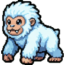

Tap a stage to read its story.
Frostape is a small sky-blue gorilla cub that walks on all fours with curious knuckling steps, its white-fluffed face full of mischief. Soft powder-blue fur covers its round body, and it can hold a perfect handful of snow in each fist for up to an hour before it melts - it uses this trick to chill warm creatures into friendliness. High on the Frozen Peaks it wanders among glaciers, playing games with frozen memory-stones it finds half-buried in the ice.
Field note: Frostape hides a single pebble under each glacier it visits - it has never revisited the same glacier twice, yet somehow always finds the pebble again.
Coral Bay. Frostape and its family are found in the Coral Bay. See everyone who lives there.
Share a Bond Food that matches its types to become friends. Frostape loves:
A Bond Food is not a trick. It joins your spirit with the Kimuro's spirit, and only when it chooses you.
Print the Kimuro adventure packs: mazes, cards, a board game and Bond Mark medals.
See the printable packs